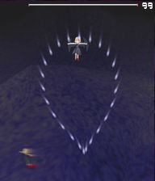
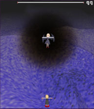

描画エフェクトのサンプルです。
| SampleE | エフェクトサンプル |
| E01 | モーションブラー |
| E02 | ボス周囲のゆらぎ |
| E01 モーションブラー | |
|  |
モーションブラーです。 このサンプルでのモーションブラーは、前フレームの描画内容を利用した残像効果です。 前フレームの描画内容を半透明で現フレームに上書きすることで残像を残します。 サンプルではSTGフレーム全体にモーションブラーをかけていますが、 一部の描画優先度のみ(例えば弾のみ)にモーションブラーをかけることもできます。 以下の手順で行えます。 1) 現フレーム描画用テクスチャAに モーションブラー対象とする範囲の優先度を描画する。 2) 前フレームの描画内容であるテクスチャBを半透明でテクスチャAに描画。 3) テクスチャAを画面に描画する。 4) 1フレーム毎にテクスチャA/Bをきりかえ1)-3)を繰り返す。 |
task TMotionBlur() { //レンダリングターゲットに使用するテクスチャ let renderTexture = [GetReservedRenderTargetName(0), GetReservedRenderTargetName(1)]; //モーションブラーでの描画でまかなえるため、 //優先度20～79の通常描画を無効にする。 SetInvalidRenderPriorityA1(20, 79); //現フレームを描画するオブジェクト let objCurentFrame = ObjPrim_Create(OBJ_SPRITE_2D); Obj_SetRenderPriorityI(objCurentFrame, 80);//優先度80に描画する ObjRender_SetPermitCamera(objCurentFrame, false); //過去フレーム用オブジェクト let objOldFrame = ObjPrim_Create(OBJ_SPRITE_2D); Obj_SetRenderPriorityI(objOldFrame, 0); ObjRender_SetPermitCamera(objOldFrame, false); ObjRender_SetAlpha(objOldFrame, 224);//α値はモーションブラーの強さになります Obj_SetVisible(objOldFrame, false);//過去フレーム用なので通常の描画がされないようにします。 //ボスのライフが0になるまでモーションブラーをかける。 let frame = 0; while(ObjEnemy_GetInfo(objEnemy, INFO_LIFE) > 0) { let currentFrameTexture = renderTexture[frame % 2]; //優先度20～79(STGフレーム全体)をテクスチャに描画する。 RenderToTextureA1(currentFrameTexture, 20, 79, true); if(frame >= 1) { //前フレームを現フレームに半透明描画 //0フレーム目は前フレームがないためこの処理は行わない。 let oldFrameTexture = renderTexture[(frame - 1) % 2]; ObjPrim_SetTexture(objOldFrame, oldFrameTexture); ObjSprite2D_SetSourceRect(objOldFrame, 32, 16, 416, 464); ObjSprite2D_SetDestRect(objOldFrame, 32, 16, 416, 464); RenderToTextureB1(currentFrameTexture, objOldFrame, false); } //現フレーム描画用オブジェクトを設定 ObjPrim_SetTexture(objCurentFrame, currentFrameTexture); ObjSprite2D_SetSourceRect(objCurentFrame, 32, 16, 416, 464); ObjSprite2D_SetDestRect(objCurentFrame, 32, 16, 416, 464); frame++; yield; } //モーションブラー用オブジェクト削除 Obj_Delete(objCurentFrame); Obj_Delete(objOldFrame); ClearInvalidRenderPriority(); }
| E02 ボス周囲のゆらぎ | |
|  |
ボス周囲のゆらぎエフェクトです。 ←の画像ではゆらいでいるのがわかりづらいので 実際の動きは本体付属のサンプルスクリプトを実行お願いします。 以下の手順で行えます。 1) 描画用テクスチャに背景を描画する。 2) 背景を描画したテクスチャをゆがませて、画面に描画する。 |
task TWaveCircle() { //レンダリングターゲットに使用するテクスチャ let renderTexture = GetReservedRenderTargetName(0); let frame = 0; //フレーム let baseEffectRadius = 144; //基準エフェクト半径 let outerFluct = 16; //エフェクト半径の最大変化量 let effectRadius = 0; //エフェクト半径 let circleVertexCount = 16; //円をあらわすのに使用する頂点の数 let innerCircleCount = 4; let priEffectMin = 20; //エフェクトをかける最小優先度 let priEffectMax = 28; //エフェクトをかける最大優先度 //背景のみエフェクトの対象とする //エフェクトの描画でまかなえるため、 //優先度20～28の通常描画を無効にする。 SetInvalidRenderPriorityA1(priEffectMin, priEffectMax); let frameWidth = GetStgFrameWidth(); let frameHeight = GetStgFrameHeight(); let frameLeft = GetStgFrameLeft(); let frameRight = frameLeft + frameWidth; let frameTop = GetStgFrameTop(); let frameBottom = frameTop + frameHeight; //-------------------------------- //円形の影 let path = GetCurrentScriptDirectory() ~ "Effect02.png"; let objShadow = ObjPrim_Create(OBJ_SPRITE_2D); //2Dスプライトオブジェクト生成 Obj_SetRenderPriorityI(objShadow, 25); //描画優先度を設定 ObjPrim_SetTexture(objShadow, path); //テクスチャを設定 ObjRender_SetBlendType(objShadow, BLEND_MULTIPLY); ObjSprite2D_SetSourceRect(objShadow, 1, 1, 255, 255); //描画元設定(44, 54)-(71,105) ObjSprite2D_SetDestCenter(objShadow); ObjRender_SetScaleXYZ(objShadow, 1.2, 1.2, 0); //-------------------------------- //円内 let objInnerC = ObjPrim_Create(OBJ_PRIMITIVE_2D); Obj_SetRenderPriorityI(objInnerC, priEffectMax + 1); ObjPrim_SetTexture(objInnerC, renderTexture); ObjPrim_SetVertexCount(objInnerC, 6 * circleVertexCount * innerCircleCount); //円外～エフェクト枠 let objOuterC = ObjPrim_Create(OBJ_PRIMITIVE_2D); Obj_SetRenderPriorityI(objOuterC, priEffectMax + 1); ObjPrim_SetTexture(objOuterC, renderTexture); //テクスチャを設定 ObjPrim_SetVertexCount(objOuterC, 3 * circleVertexCount); //エフェクト枠外オブジェクト let objOuterE = ObjPrim_Create(OBJ_SPRITE_LIST_2D); Obj_SetRenderPriorityI(objOuterE, priEffectMax + 1); ObjPrim_SetTexture(objOuterE, renderTexture); //テクスチャを設定 //ボスのライフが0になるまでエフェクトをかける。 let objEnemy = GetEnemyBossObjectID[0]; while(ObjEnemy_GetInfo(objEnemy, INFO_LIFE) > 0) { //エフェクト半径 effectRadius = baseEffectRadius + outerFluct * sin(frame*4); let enemyX = ObjMove_GetX(objEnemy); //敵座標X let enemyY = ObjMove_GetY(objEnemy); //敵座標Y let circleLeft = enemyX - effectRadius + frameLeft; //エフェクト円の左端 let circleRight = enemyX + effectRadius + frameLeft; //エフェクト円の右端 let circleTop = enemyY - effectRadius + frameTop; //エフェクト円の上端 let circleBottom = enemyY + effectRadius + frameTop; //エフェクト円の下端 //-------------------------------- //優先度20～28(背景)をエフェクト用のテクスチャに描画 RenderToTextureA1(renderTexture, priEffectMin, priEffectMax, true); //-------------------------------- //影 ObjRender_SetPosition(objShadow, enemyX, enemyY, 0); //-------------------------------- //円内 //エフェクト内円を描画 //ゆらいでいる部分 ObjRender_SetPosition(objInnerC, -frameLeft, -frameTop, 0); ascent(let iPosI in 0 .. circleVertexCount) { let xyOldRadius = 0; ascent(let iCircle in 0 .. innerCircleCount) { let vertexIndex = (iPosI * innerCircleCount + iCircle) * 6; let angle1 = iPosI * (360 / circleVertexCount); let angle2 = (iPosI + 1) * (360 / circleVertexCount); //テクスチャのUV座標 let uvRadius1 = iCircle * effectRadius / innerCircleCount; let uvRadius2 = (iCircle + 1) * effectRadius / innerCircleCount; //テクスチャのUV座標と描画先のXY座標を変化させることでゆらぎを表現する let xyRadius1t = iCircle * effectRadius / innerCircleCount; let xyRadius2t = (iCircle + 1) * effectRadius / innerCircleCount; let xyRadius1 = xyOldRadius; let xyBias = (xyRadius2t - xyRadius1t) / 2 + (xyRadius2t - xyRadius1t) * sin(frame*16 + (iCircle * 360 / innerCircleCount)) / 4; let xyRadius2 = xyRadius2t + xyBias / ((innerCircleCount - iCircle + 1) / 2); xyOldRadius = xyRadius2; if(iCircle == innerCircleCount - 1) { xyRadius2 = uvRadius2; } //上記の頂点座標を設定 let leftBias = enemyX + frameLeft; let topBias = enemyY + frameTop; ObjPrim_SetVertexPosition(objInnerC, vertexIndex , leftBias + xyRadius1 * cos(angle1), topBias + xyRadius1 * sin(angle1), 0); ObjPrim_SetVertexPosition(objInnerC, vertexIndex+1, leftBias + xyRadius2 * cos(angle1), topBias + xyRadius2 * sin(angle1), 0); ObjPrim_SetVertexPosition(objInnerC, vertexIndex+2, leftBias + xyRadius1 * cos(angle2), topBias + xyRadius1 * sin(angle2), 0); ObjPrim_SetVertexPosition(objInnerC, vertexIndex+3, leftBias + xyRadius1 * cos(angle2), topBias + xyRadius1 * sin(angle2), 0); ObjPrim_SetVertexPosition(objInnerC, vertexIndex+4, leftBias + xyRadius2 * cos(angle1), topBias + xyRadius2 * sin(angle1), 0); ObjPrim_SetVertexPosition(objInnerC, vertexIndex+5, leftBias + xyRadius2 * cos(angle2), topBias + xyRadius2 * sin(angle2), 0); ObjPrim_SetVertexUVT(objInnerC, vertexIndex , leftBias + uvRadius1 * cos(angle1), topBias + uvRadius1 * sin(angle1)); ObjPrim_SetVertexUVT(objInnerC, vertexIndex+1, leftBias + uvRadius2 * cos(angle1), topBias + uvRadius2 * sin(angle1)); ObjPrim_SetVertexUVT(objInnerC, vertexIndex+2, leftBias + uvRadius1 * cos(angle2), topBias + uvRadius1 * sin(angle2)); ObjPrim_SetVertexUVT(objInnerC, vertexIndex+3, leftBias + uvRadius1 * cos(angle2), topBias + uvRadius1 * sin(angle2)); ObjPrim_SetVertexUVT(objInnerC, vertexIndex+4, leftBias + uvRadius2 * cos(angle1), topBias + uvRadius2 * sin(angle1)); ObjPrim_SetVertexUVT(objInnerC, vertexIndex+5, leftBias + uvRadius2 * cos(angle2), topBias + uvRadius2 * sin(angle2)); } } //-------------------------------- //円外～エフェクト枠 //揺らいでいる円の外側から矩形までを埋める ObjRender_SetPosition(objOuterC, -frameLeft, -frameTop, 0); ascent(let iPosO in 0 .. circleVertexCount) { let angle1 = iPosO * (360 / circleVertexCount); let angle2 = (iPosO + 1) * (360 / circleVertexCount); let rectX = 0; let rectY = 0; if(angle1 >= 0 && angle1 < 90) { rectX = circleRight; rectY = circleBottom; } else if(angle1 >= 90 && angle1 < 180) { rectX = circleLeft; rectY = circleBottom; } else if(angle1 >= 180 && angle1 < 270) { rectX = circleLeft; rectY = circleTop; } else if(angle1 >= 270 && angle1 < 360) { rectX = circleRight; rectY = circleTop; } let vertexIndex = iPosO * 3; ObjPrim_SetVertexPosition(objOuterC, vertexIndex, enemyX + effectRadius * cos(angle1) + frameLeft, enemyY + effectRadius * sin(angle1) + frameTop, 0); ObjPrim_SetVertexPosition(objOuterC, vertexIndex+1, rectX, rectY, 0); ObjPrim_SetVertexPosition(objOuterC, vertexIndex+2, enemyX + effectRadius * cos(angle2) + frameLeft, enemyY + effectRadius * sin(angle2) + frameTop, 0); ObjPrim_SetVertexUVT(objOuterC, vertexIndex, enemyX + effectRadius * cos(angle1) + frameLeft, enemyY + effectRadius * sin(angle1) + frameTop); ObjPrim_SetVertexUVT(objOuterC, vertexIndex+1, rectX, rectY); ObjPrim_SetVertexUVT(objOuterC, vertexIndex+2, enemyX + effectRadius * cos(angle2) + frameLeft, enemyY + effectRadius * sin(angle2) + frameTop); } //-------------------------------- //エフェクト枠外 //エフェクト枠外の背景を描画する ObjSpriteList2D_ClearVertexCount(objOuterE); ObjRender_SetPosition(objOuterE, -frameLeft, -frameTop, 0); ObjSpriteList2D_SetSourceRect(objOuterE, frameLeft, frameTop, frameRight, circleTop + 1); ObjSpriteList2D_SetDestRect(objOuterE, frameLeft, frameTop, frameRight, circleTop + 1); ObjSpriteList2D_AddVertex(objOuterE); ObjSpriteList2D_SetSourceRect(objOuterE, frameLeft, circleTop, circleLeft + 1, circleBottom); ObjSpriteList2D_SetDestRect(objOuterE, frameLeft, circleTop, circleLeft + 1, circleBottom); ObjSpriteList2D_AddVertex(objOuterE); ObjSpriteList2D_SetSourceRect(objOuterE, circleRight, circleTop, frameRight, circleBottom); ObjSpriteList2D_SetDestRect(objOuterE, circleRight, circleTop, frameRight, circleBottom); ObjSpriteList2D_AddVertex(objOuterE); ObjSpriteList2D_SetSourceRect(objOuterE, frameLeft, circleBottom, frameRight, frameBottom); ObjSpriteList2D_SetDestRect(objOuterE, frameLeft, circleBottom, frameRight, frameBottom); ObjSpriteList2D_AddVertex(objOuterE); frame++; yield; } //エフェクト用オブジェクト削除 Obj_Delete(objInnerC); Obj_Delete(objOuterC); Obj_Delete(objOuterE); Obj_Delete(objShadow); ClearInvalidRenderPriority(); }